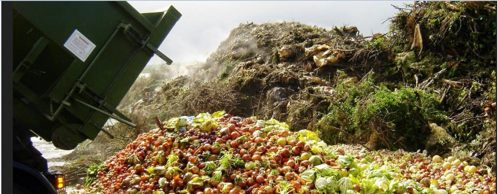

Publicado em 25 de March de 2011 por Sherlen Santos de Oliveira
Por: Gabriela Costa e Sherlen Oliveira (autoras do artigo)
Neste trabalho mostrou-se uma forma sustentável de se utilizar restos materiais orgânicos (cascas de frutas, verduras e legumes). Esta reutilização foi feita através de um biodigestor, obtendo como resultado o biogás que pode ser utilizado como combustível para motores de combustão interna, em geladeiras, para a geração de energia elétrica entre outros, e o biofertilizante que pode ser utilizado para recuperar terras agrícolas empobrecidas em nutrientes pelo excesso ou uso contínuo de fertilizantes inorgânicos, não propagando mau cheiro, sendo rico em nitrogênio, substância muito carente no solo, alem de ser um agente de combate à erosão, porque mantém o equilíbrio ecológico retendo maior quantidade de água pluvial. Palavra-chave: Sustentabilidade, Energia limpa, resíduo orgânico, biodigestor.

A todo o lixo que se origina a partir de um ser vivo, seja ele vegetal ou
animal, recebe a denominação de lixo orgânico. Este é um tipo de lixo
que,
de maneira geral, se produz nas casas, empresas, escolas, restaurantes,
hotéis, pela própria natureza; e como exemplos de lixo orgânico podem ser
citados
os restos de carnes, frutos, vegetais, cascas de ovos, sementes, ossos, ou
seja, todas as sobras de alimentos orgânicos e mais papel, madeira, etc.
É preciso que se tenha muita atenção quanto à destinação a ser dada a esse
lixo orgânico, uma vez que se deixado na natureza pode trazer
conseqüências
prejudiciais aos seres humanos, como é o caso de mau cheiro, surgimento de
insetos e ratos, desenvolvimento de fungos e bactérias. Como resultado de
tudo isso,
várias são as doenças que podem aparecer tendo como causa a contaminação
da água e do solo.
O lixo mal acondicionado significa poluição ambiental, podendo assim,
causar riscos à saúde da população.
Grandes cidades geram grandes quantidades de resíduos, ou seja, quanto
maior a população maior a quantidade de resíduos gerados.
A melhor solução é reciclar e reutilizar tudo que for possível. Aterros
sanitários regionais não comportam todo o lixo que a população produz.
Uma forma de estar tratando todo este lixo e ainda o utilizando como fonte
de energia alternativa limpa é controlando o resíduo orgânico através de
biodigestores.
Biodigestor é um reservatório onde se coloca a biomassa (lixo) misturada
com água. É no seu interior que acontece a fermentação da biomassa, dando
origem ao biogás e o biofertilizante.
Este biogás pode ser utilizado em lampião, para o aquecimento de fogões e
também para a geração de energia elétrica. Cada biodigestor tem uma
característica; Existem os de produção batelada
ou de produção continua. Produção de batelada, a biomassa é colocada
dentro do biodigestor que é totalmente fechado e só será aberto após a
produção de biogás, o que levará
mais ou menos noventa dias. Após a fermentação da biomassa, o biodigestor
é aberto, limpo e novamente carregado para um novo ciclo de produção de
biogás. Produção contínua,
a produção pode acontecer por um longo período, sem que haja a necessidade
de abertura do equipamento. A biomassa é colocada no biodigestor ao mesmo
tempo em que o biofertilizante é retirado.
Neste trabalho apresentou-se uma forma de reciclagem de resido orgânico que, segundo MAPA (2010) - Ministério da Agricultura, Pecuária e Abastecimento 75% das cidades brasileiras dispõem seus resíduos sólidos em lixões. Tais situações podem trazer diversos comprometimentos ao meio ambiente e à saúde da população que reside próximo à disposição do lixo. Podem-se citar problemas como: surgimento de focos de vetores transmissores de doenças, mau cheiro, possíveis contaminação do solo e corpos d'água, além da inevitável destruição da paisagem urbana das cidades, principalmente.
Segundo MAPA (2010) - Ministério da Agricultura, Pecuária e Abastecimento é fundamental que governo e sociedade assumam novas atitudes, visando gerenciar de modo mais adequado a grande quantidade e diversidade de resíduos que são produzidos diariamente nas empresas e residências. Portanto, é preciso inverter a pirâmide, o que significa colocar em prática a desejável política dos "3 Rs" (Reduzir, Reusar e Reciclar) e não continuar produzindo e gerando mais resíduos, deixando que "alguém"assuma a responsabilidade de tratar e dispor adequadamente."
Para que isto aconteça, e preciso que as pessoas obtenham informações e conscientizem de que os "Rs" são a melhor solução pra evitarmos problemas como os citados a cima.
MAPA (2010) - Ministério da Agricultura, Pecuária e Abastecimento acredita que modificar pequenas atitudes do dia a dia como: usar o papel dos dois lados, imprimir somente o que é necessário, otimizar o tamanho do papel ao real espaço da mensagem, usar embalagens recicláveis (papel ou papelão), adotar práticas de reciclagem e reuso, como levar sacolas para as compras em vez de sempre usar embalagens novas, separar resíduos "sujos" de resíduos "limpos" que impedem ou dificultam a reciclagem, utilizar frutas e legumes com cascas ou incorporá-las ao solo, separar resíduos perigosos, como pilhas, lâmpadas, medicamentos, material de limpeza, tinta de cabelo e outros produtos químicos igualmente danosos ao meio ambiente e à saúde humana.
Todas estas práticas reduzirão o volume de resíduos gerados diariamente pela população que, segundo MAPA (2010) - Ministério da Agricultura, Pecuária e Abastecimento, a composição do lixo urbano depende do porte do município e dos hábitos da população e a maioria do lixo orgânico gerado por estes é orgânico (cerca de 65%). Também permitirão o exercício de reuso, culminando num melhor gerenciamento dos resíduos. São atitudes simples e viáveis que poderemos incorporar cada vez mais, a fim de proteger o ar, o solo e a água, trazendo como conseqüências melhores condições de saúde humana, qualidade de vida e saúde ambiental.
Para o estudo do tema proposto foram utilizados três biodigestores em
batelada. Os biodigestores constituíram basicamente de garrafa pet, com
capacidade de 2 litros de biomassa em fermentação.
O experimento foi conduzido no período 2/05/2010 a 6/05/2010,
utilizando-se nas mesmas proporções para os três biodigestores um copo
(requeijão) de cascas de laranja, banana e mamão, ½ copo (requeijão) de
casca de maçã e abacate, um e 1/3 copo (requeijão) de água, foi adicionado
também em um dos biodigestores ¼ de (xícara) fermento, e outro ¼ de
(xícara) solo.
Assim com o propósito de avaliar a produção do biogás e biofertilizante a partir das matérias primas, os experimentos foram conduzidos.
Estatística aplicada e probabilidade:
Foram amostradas 12 medidas da temperatura ambiente dos biodigestores. Os
dados em T°C são:
26,7; 27; 24; 21; 26; 19,5; 19; 29,3; 23; 19,7; 28,3; 27,7.
Com estes valores calculamos a média e o desvio padrão da amostra cujos
resultados são:
Média= 24,26ºC
Soma => (xi-x)² = 153.38
S² ->153.38/12-1= 13.94
Desvio padrão =>RAIZ de 13.94 = 3.73
Para produção do biodigestor, foi feito primeiramente, um desenho ilustrando como seria o protótipo do trabalho, mostrando graficamente as dimensões que estão detalhadas no anexo.
Após todo processo de produção do biogás, existe uma sobra dentro do biodigestor que podemos chamar de biofertilizante, podendo ser usado como adubo orgânico para fortalecer o solo e para o desenvolvimento das plantas. O uso do biofertilizante apresenta algumas vantagens, como não apresentar custo nenhum e se comparado aos fertilizantes inorgânicos, não propaga mau cheiro, é rico em nitrogênio, substância muito carente no solo, recupera terras agrícolas empobrecidas em nutrientes pelo excesso ou uso continuo de fertilizantes inorgânicos, ou seja, produtos químicos são um agente de combate à erosão, porque mantém o equilíbrio ecológico retendo maior quantidade de água pluvial, o resíduo da matéria orgânica apresenta uma capacidade de retenção de umidade pelo solo, permitindo que a planta se desenvolva durante o período de seca.
A pressão do gás dentro da garrafa é medida usando um tubo em "U" chamado manômetro de coluna, seu principio de funcionamento consiste na aplicação de pressão num de seus ramos o que provocará a decida do liquido azul de metileno por este ramo e a subir no outro. O principio de medição consiste no fato de que ao se aplicar a lei p=d.g.h, a pressão "p" para ser medida deve ser compara a altura "h" da coluna de liquido.
Calculo da pressão exercida dentro dos biodigestores:
Biodigestor I- Fruta e água
Pressão=?
Altura=> 5.0-4.7=0,3 cm =0.003m
Densidade=0.25 g/ml= 0.25x103kg/dm3
Gravidade=9.8 m/s2
P=h.g.d
P=0.003m x 9.8 m/s2 x0.25x103kg/dm3
P=7.35 Pa = 0.06 mmHg
Biodigestor II-Fruta, fermento e água.
Pressão=?
Altura => 5.8-4.7=1.1 cm =0.011m
Densidade=0.25 g/ml = 0.25x103kg/dm3
Gravidade=9.8 m/s2
P=h.g.d
P=0.011m x 9.8 m/s2 x 0.25x103kg/dm3
P= 26.95 Pa = 0.2 mmHg
Biodigestor III - Fruta, solo e água.
Pressão=?
Altura => 18.7- 4.7=14 cm =0.14 m
Densidade=0.25 g/ml = 0.25x103kg/dm3
Gravidade=9.8 m/s2
P=h.g.d
P=0.14m x 9.8 m/s2 x 0.25x103kg/dm3
P= 343 Pa = 2.57 mmHg
Analisamos durante a semana nos mesmos horários 05h00min, 15h00min e 22h00minhs os três biodigestores, observando sempre a variação da temperatura e o volume de água contido dentro do manômetro.
Na Figura 2 apresenta-se a variação do volume, em cm, da pressão do gás metano (CH4) dentro dos biodigestores, durante cinco dias.
Figura 4: Produção de biogás durante cinco dias.
No gráfico, a produção de gás dos biodigestores 1, 2 e 3 são representados, respectivamente, pelas cores roxo, vermelho escuro e amarelo.
Os três biodigestores foram carregados com resíduo orgânico no mesmo horário do dia 02/05/2010. O biodigestor 1, contendo cascas de frutas e água, não apresentou produção de gás nos primeiros dias. No quinto dia apresentou uma pequena diferença no volume de água do manômetro, mostrando uma notável produção de gás. Depois disto, manteve-se inalterado, somente com pequenas diferenças de volume devido à temperatura, que causa compressão ou expansão do gás presente dentro do biodigestor. O biodigestor 2, contendo cascas de frutas água e fermento obteve uma produção de gás significativa após o primeiro dia. Nos dias 04, 05 e 06 mostrou-se uma redução no volume de água do manômetro (compressão do gás dentro do biodigestor). A partir do quinto dia mostrou-se inalterado a coluna de água, tornando-se estável a produção de gás dentro deste biodigestor. Após 4 horas do carregamento dos três biodigestores, o biodigestor 3 contendo cascas de frutas, água e terra obteve uma produção de gás superior ao nosso limite de medida (18 cm), ocorrendo vazamento da água contida no manômetro.
Segundo os resultados obtidos, e as observações feitas ao experimento com três biodigestores (o 1°cascas de frutas e água, o 2ª cascas de frutas, água e fermento, e o 3ª cascas de frutas, água e terra), concluímos que para uma produção de biogás rápida, o melhor tipo de biodigestor deve ser feito com uma medida de terra (solo).
Os solos são constituídos de proporções e tipos variáveis de minerais, gases, água e matéria orgânica, o que facilita e acelera o processo de decomposição de matéria orgânica e produção do biogás.
O biodigestor composto por cascas de frutas (resíduo orgânico), água e terra teve uma produção muito rápida de gás, excedendo o limite do nosso instrumento de medida que tem a altura de 14 cm, o que nos leva à conclusão de que a adição de terra proporciona um resultado em menos tempo que o biodigestor composto apenas por cascas de frutas e água, que seu limite de produção de gás não ultrapassou os 5 cm de altura, tornando-se estável a produção de gás em um período de sete dias. Esperávamos como resultado, que o biodigestor mais rápido na produção de gás fosse o que havia acréscimo de fermento, que poderia acelerar as reações. No entanto, foi o que mais obteve oscilações entre as alturas, que nos indica a produção do gás, também se tornando estável a produção do gás após sete dias com a altura inicial do processo, de 4.7cm.